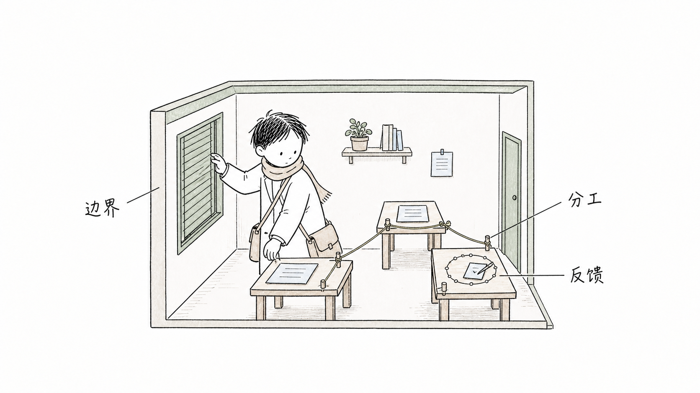
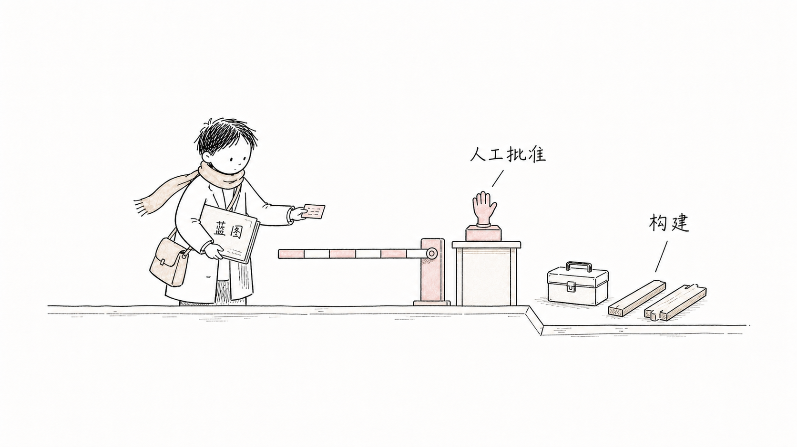

03
HARNESS / RUNTIME POLICY
Control the environment.
Tools, permissions, context, budgets, state, evidence, cancellation, and provider boundaries.
Turn intent into a bounded Harness–Graph–Loop Blueprint. Validate it. Ask a human. Only then generate the system.
01 / WHY
Reliability comes from explicit boundaries: what enters, what may act, what returns, what proves success, and when the system stops.
02 / JOURNEY
The Blueprint keeps design separate from execution, and keeps evidence separate from conversation volume.


03 / SYSTEM
HARNESS / RUNTIME POLICY
Tools, permissions, context, budgets, state, evidence, cancellation, and provider boundaries.
GRAPH / DEPENDENCY MODEL
Typed nodes, explicit edges, entry points, failure routes, fan-in, and independent review.
LOOP / BOUNDED UNIT
Gather, act, verify, repair, persist, and stop—inside a finite budget.
04 / BLUEPRINT
The Blueprint is provider-neutral, machine-validatable, and unable to approve itself. Material changes return it to review.
05 / INVARIANTS
Missing evidence never becomes success.
Each phase receives only the capabilities it needs.
Unsupported runtimes remain future work, not badges.
A fresh agent can resume without reconstructing chat history.
06 / START
Ask the Skill to design first. It will choose the smallest justified shape, validate the contract, and stop at the human approval gate.
Use $harness-graph-loop-builder to design a reviewable HGL Blueprint for [my goal]. Do not build until I approve.
Code repair · data analysis · medical education · content production · compliance · dataset quality · product delivery
Open the complete guide ↗HGL BLUEPRINT / V1
Provider-neutral by design. Codex-first in version one.
Read the documentation